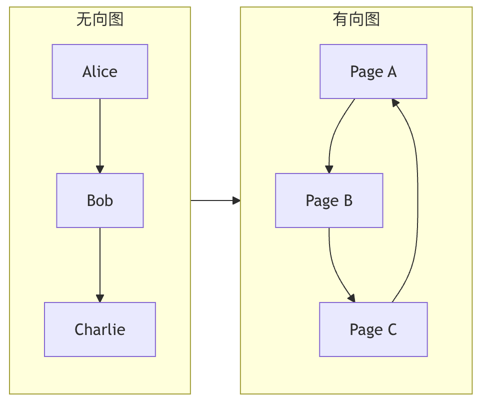

图论结构
在计算机科学中，图被广泛用于模拟社交网络（用户是点，好友关系是线）、网页链接（网页是点，超链接是线）、通信网络乃至路径规划等问题。
图就像是一张社交网络关系图：
- 节点（顶点）：社交网络中的每个人
- 边：人与人之间的关系（好友、关注等）
- 权重：关系的强度（亲密度、互动频率等）
想象一下你所在城市的交通网络：各个地点（如家、学校、商场）是点，连接这些地点的道路是线。图（Graph）就是这种点和线关系的数学抽象，它是用于表示实体间复杂关系的一种数据结构。
现实生活中的案例：
- 地图：城市是节点，道路是边，距离是权重
- 电路：元件是节点，导线是边，电阻是权重
- 互联网：网站是节点，链接是边，流量是权重
- 交通网络：车站是节点，线路是边，票价是权重
| 场景 | 其他结构 | 图结构 |
|---|---|---|
| 社交关系 | 难以表达复杂关系 | 自然表达多对多关系 |
| 路径规划 | 需要复杂的数据结构 | 直观表示网络和路径 |
| 依赖关系 | 难以表示循环依赖 | 轻松处理复杂依赖 |
| 网络分析 | 无法表达网络拓扑 | 完美描述网络结构 |
图的基本术语
| 术语 | 定义 | 生活比喻 | 符号表示 |
|---|---|---|---|
| 顶点（Vertex） | 图中的基本单元 | 社交网络中的人 | V, u, v |
| 边（Edge） | 连接两个顶点的线 | 两人之间的关系 | E, (u,v) |
| 度（Degree） | 顶点连接的边数 | 一个人的好友数量 | deg(v) |
| 路径（Path） | 顶点的序列 | 从A到B的路线 | v₁→v₂→…→vₙ |
| 环（Cycle） | 起点和终点相同的路径 | 从家出发最终回家 | v₁→v₂→…→v₁ |
| 连通图 | 任意两点间都有路径 | 所有人都能互相联系 | |
| 权重（Weight） | 边的数值属性 | 两城市间的距离 | w(u,v) |
图的分类

| 分类标准 | 类型 | 特点 | 应用场景 |
|---|---|---|---|
| 方向性 | 无向图 | 边没有方向 | 好友关系、道路网络 |
| 有向图 | 边有方向 | 关注关系、工作流程 | |
| 权重 | 无权图 | 所有边权重相同 | 社交网络关系 |
| 有权图 | 边有不同权重 | 地图距离、网络流量 | |
| 连通性 | 连通图 | 任意两点可达 | 交通网络 |
| 非连通图 | 存在孤立点 | 社交群体 | |
| 环 | 无环图 | 没有环路 | 任务依赖、家族树 |
| 有环图 | 包含环路 | 道路网络 |
图的表示方法
邻接矩阵
| 特性 | 描述 | 时间复杂度 | 空间复杂度 |
|---|---|---|---|
| 存储方式 | 二维矩阵 | ||
| 检查边存在 | matrix[i][j] != 0 |
O(1) | |
| 添加边 | matrix[i][j] = weight |
O(1) | |
| 删除边 | matrix[i][j] = 0 |
O(1) | |
| 遍历邻接点 | 扫描一行/列 | O(V) | |
| 空间占用 | V×V矩阵 | O(V²) |
邻接表
| 特性 | 描述 | 时间复杂度 | 空间复杂度 |
|---|---|---|---|
| 存储方式 | 数组+链表 | ||
| 检查边存在 | 在链表中查找 | O(deg(v)) | |
| 添加边 | 在链表中添加 | O(1) | |
| 删除边 | 在链表中删除 | O(deg(v)) | |
| 遍历邻接点 | 遍历链表 | O(deg(v)) | |
| 空间占用 | 顶点数组+边链表 | O(V+E) |
图的基本概念
一个图G由两个集合构成：
- 顶点集 V (Vertex Set): 图中所有点的集合。
- 边集 E (Edge Set): 连接这些点的线的集合。一条边由其连接的两个顶点
(u, v)表示。
实例
# 一个简单的图示例：用字典表示社交网络好友关系
# 顶点： Alice, Bob, Charlie, Diana
# 边： 表示他们之间的好友关系
social_graph = {
'Alice': ['Bob', 'Charlie'], # Alice 是 Bob 和 Charlie 的好友
'Bob': ['Alice', 'Charlie', 'Diana'],
'Charlie': ['Alice', 'Bob'],
'Diana': ['Bob']
}
print(f"顶点（用户）: {list(social_graph.keys())}")
print(f"Alice 的好友（边）: {social_graph['Alice']}")
# 顶点： Alice, Bob, Charlie, Diana
# 边： 表示他们之间的好友关系
social_graph = {
'Alice': ['Bob', 'Charlie'], # Alice 是 Bob 和 Charlie 的好友
'Bob': ['Alice', 'Charlie', 'Diana'],
'Charlie': ['Alice', 'Bob'],
'Diana': ['Bob']
}
print(f"顶点（用户）: {list(social_graph.keys())}")
print(f"Alice 的好友（边）: {social_graph['Alice']}")
输出：
顶点（用户）: ['Alice', 'Bob', 'Charlie', 'Diana'] Alice 的好友（边）: ['Bob', 'Charlie']
图的分类与重要概念
图可以根据其边的特性分为多种类型，理解这些是掌握图论的基础。
无向图 vs 有向图
| 类型 | 边（Edge）的特点 | 生活类比 | 示例 |
|---|---|---|---|
| 无向图 | 边没有方向，(A, B)表示 A 和 B 互相连接。 |
双向友谊：如果 Alice 是 Bob 的朋友，那么 Bob 也一定是 Alice 的朋友。 | 社交网络中的好友关系、电路中的连接。 |
| 有向图 | 边有方向，A -> B表示从 A 指向 B 的单向连接。 |
微博关注：你可以关注某人，但对方不一定关注你。 | 网页超链接、任务依赖关系、交通单行道。 |

权重图
在权重图中，每条边都被赋予一个数值（权重），可以表示距离、成本、时间或关系强度。
实例
# 一个表示城市间距离的权重图（邻接表形式）
weighted_graph = {
'北京': {('上海', 1200), ('天津', 100)}, # 北京到上海距离1200，到天津距离100
'上海': {('北京', 1200), ('杭州', 200)},
'天津': {('北京', 100)},
'杭州': {('上海', 200)}
}
weighted_graph = {
'北京': {('上海', 1200), ('天津', 100)}, # 北京到上海距离1200，到天津距离100
'上海': {('北京', 1200), ('杭州', 200)},
'天津': {('北京', 100)},
'杭州': {('上海', 200)}
}
关键术语
- 度 (Degree): 与一个顶点相连的边的数量。在有向图中，分为入度（指向该顶点的边数）和出度（从该顶点指出的边数）。
- 路径 (Path): 从一个顶点到另一个顶点经过的边序列。如
A -> B -> C。 - 环/回路 (Cycle): 起点和终点是同一个顶点的路径。
- 连通图 (Connected Graph): 在无向图中，任意两个顶点间都存在路径。
- 强连通图 (Strongly Connected Graph): 在有向图中，任意两个顶点间都存在双向路径。
图的存储方式
如何在计算机中表示一个图？主要有两种主流方法。
邻接矩阵
使用一个二维数组（矩阵）matrix来表示图。matrix[i][j]的值表示顶点i到顶点j的边的情况。
- 对于无向图，矩阵是对称的。
- 对于权重图，矩阵值存储权重（用特殊值如
0或∞表示无边）。 - 优点：检查任意两个顶点间是否有边非常快（
O(1)）。 - 缺点：占用空间大（
O(V^2)），对于边数较少的"稀疏图"浪费空间。
实例
# 使用邻接矩阵表示一个无向图
# 顶点： 0-A, 1-B, 2-C
# 边： A-B, A-C
V = 3 # 顶点数
adj_matrix = [[0] * V for _ in range(V)]
# 添加边 A-B (0-1)
adj_matrix[0][1] = 1
adj_matrix[1][0] = 1 # 无向图需要设置对称位置
# 添加边 A-C (0-2)
adj_matrix[0][2] = 1
adj_matrix[2][0] = 1
print("邻接矩阵：")
for row in adj_matrix:
print(row)
# 输出：
# [0, 1, 1]
# [1, 0, 0]
# [1, 0, 0]
# 顶点： 0-A, 1-B, 2-C
# 边： A-B, A-C
V = 3 # 顶点数
adj_matrix = [[0] * V for _ in range(V)]
# 添加边 A-B (0-1)
adj_matrix[0][1] = 1
adj_matrix[1][0] = 1 # 无向图需要设置对称位置
# 添加边 A-C (0-2)
adj_matrix[0][2] = 1
adj_matrix[2][0] = 1
print("邻接矩阵：")
for row in adj_matrix:
print(row)
# 输出：
# [0, 1, 1]
# [1, 0, 0]
# [1, 0, 0]
邻接表
为每个顶点维护一个列表（链表、数组等），记录与其直接相连的所有顶点（及权重）。
- 优点：空间效率高（
O(V + E)），特别适合稀疏图。能快速找到一个顶点的所有邻居。 - 缺点：检查任意两个顶点间是否有边较慢（
O(degree(V))）。
实例
# 使用邻接表（字典+列表）表示同一个无向图
adj_list = {
'A': ['B', 'C'], # A 连接着 B 和 C
'B': ['A'], # B 连接着 A
'C': ['A'] # C 连接着 A
}
print("邻接表：")
for vertex, neighbors in adj_list.items():
print(f"{vertex}: {neighbors}")
adj_list = {
'A': ['B', 'C'], # A 连接着 B 和 C
'B': ['A'], # B 连接着 A
'C': ['A'] # C 连接着 A
}
print("邻接表：")
for vertex, neighbors in adj_list.items():
print(f"{vertex}: {neighbors}")
图的遍历算法
遍历是图算法的基础，意味着系统地访问图中的每一个顶点。
主要有两种策略：
广度优先搜索
广度优先搜索（BFS）像"水波扩散"一样，从起点开始，先访问所有直接邻居，再访问邻居的邻居，依此类推。它使用队列来实现。
算法步骤：
- 将起点放入队列并标记为已访问。
- 当队列不为空时：
a. 取出队首顶点
v。 b. 访问v的所有未访问邻居，将它们放入队列并标记为已访问。 - 重复步骤2。
实例
from collections import deque
def bfs(graph, start):
"""使用 BFS 遍历图，返回访问顺序"""
visited = set([start]) # 记录已访问顶点
queue = deque([start]) # 初始化队列
result = [] # 存储访问顺序
while queue:
vertex = queue.popleft()
result.append(vertex)
# 遍历当前顶点的邻居
for neighbor in graph[vertex]:
if neighbor not in visited:
visited.add(neighbor)
queue.append(neighbor)
return result
# 测试数据
test_graph = {
'A': ['B', 'C'],
'B': ['A', 'D', 'E'],
'C': ['A', 'F'],
'D': ['B'],
'E': ['B', 'F'],
'F': ['C', 'E']
}
print("BFS 遍历顺序（从A开始）:", bfs(test_graph, 'A'))
# 输出可能是: ['A', 'B', 'C', 'D', 'E', 'F']
def bfs(graph, start):
"""使用 BFS 遍历图，返回访问顺序"""
visited = set([start]) # 记录已访问顶点
queue = deque([start]) # 初始化队列
result = [] # 存储访问顺序
while queue:
vertex = queue.popleft()
result.append(vertex)
# 遍历当前顶点的邻居
for neighbor in graph[vertex]:
if neighbor not in visited:
visited.add(neighbor)
queue.append(neighbor)
return result
# 测试数据
test_graph = {
'A': ['B', 'C'],
'B': ['A', 'D', 'E'],
'C': ['A', 'F'],
'D': ['B'],
'E': ['B', 'F'],
'F': ['C', 'E']
}
print("BFS 遍历顺序（从A开始）:", bfs(test_graph, 'A'))
# 输出可能是: ['A', 'B', 'C', 'D', 'E', 'F']
深度优先搜索
深度优先搜索（DFS）像"走迷宫"一样，选择一条路走到尽头，然后回溯，再走另一条路。它使用栈（或递归）来实现。
递归算法步骤：
- 从顶点
v开始，标记为已访问。 - 对于
v的每一个未访问邻居u： a. 递归调用DFS(u)。
实例
def dfs_recursive(graph, vertex, visited=None, result=None):
"""使用递归实现 DFS"""
if visited is None:
visited = set()
if result is None:
result = []
visited.add(vertex)
result.append(vertex)
for neighbor in graph[vertex]:
if neighbor not in visited:
dfs_recursive(graph, neighbor, visited, result)
return result
print("DFS 遍历顺序（从A开始）:", dfs_recursive(test_graph, 'A'))
# 输出可能是: ['A', 'B', 'D', 'E', 'F', 'C']
"""使用递归实现 DFS"""
if visited is None:
visited = set()
if result is None:
result = []
visited.add(vertex)
result.append(vertex)
for neighbor in graph[vertex]:
if neighbor not in visited:
dfs_recursive(graph, neighbor, visited, result)
return result
print("DFS 遍历顺序（从A开始）:", dfs_recursive(test_graph, 'A'))
# 输出可能是: ['A', 'B', 'D', 'E', 'F', 'C']
图遍历算法对比:

经典应用场景与算法简介
掌握了图的表示和遍历，你就可以探索许多经典问题了：
最短路径问题：在地图导航中，找到两点间的最短行驶距离。
- 迪杰斯特拉算法：适用于权重非负的图。
- 弗洛伊德算法：计算所有顶点对之间的最短路径。
最小生成树：在保证所有顶点连通的前提下，选择总权重最小的边集（例如，为多个村庄铺设成本最低的光纤网络）。
- 普里姆算法
- 克鲁斯卡尔算法
拓扑排序：对有向无环图（DAG）的顶点进行线性排序，使得对于任何有向边
u->v，u在排序中都排在v之前（例如，安排课程的学习顺序）。
点我分享笔记
<p style="font-size:14px;">笔记需要是本篇文章的内容扩展！</p><br> <p style="font-size:12px;"><a href="../tougao.html" target="_blank">文章投稿，可点击这里</a></p> <p style="font-size:14px;"><a href="../w3cnote/runoob-user-test-intro.html" target="_blank">注册邀请码获取方式</a></p> <h3 class="text-muted"><i class="fa fa-info-circle" aria-hidden="true"></i> 分享笔记前必须<a href=";.html" class="runoob-pop">登录</a>！</h3> <p><a href="../w3cnote/runoob-user-test-intro.html" target="_blank">注册邀请码获取方式</a></p>